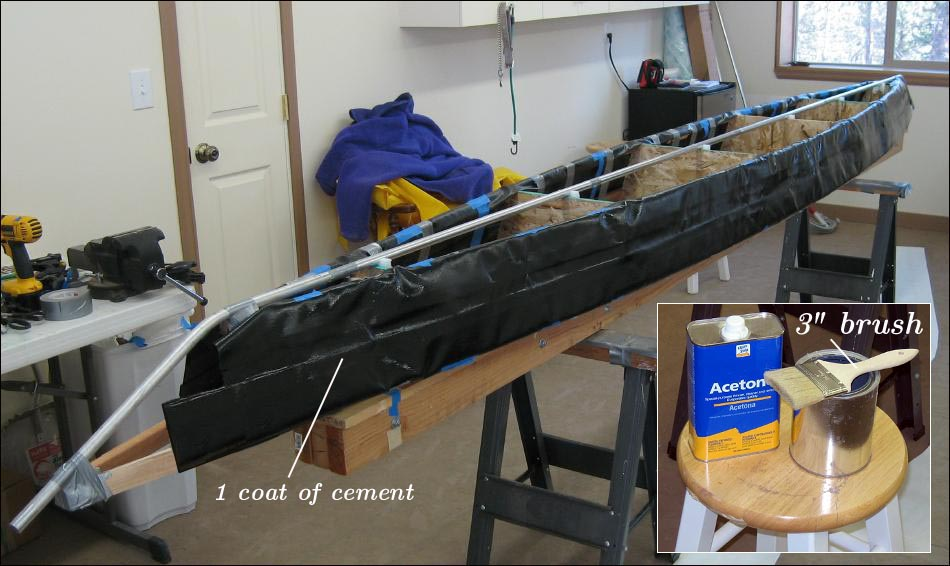

| Sonnet ( Sleeves) | Menu Previous Page Next Page |
|

The area to be glued extends from the chine outer edge to the gunwale outer edge and along the entire length of the sleeve. One coat of vinyl cement is adequate on the sleeve and the inside hull skin. A cheap throw-away 3" brush works well for applying cement to this wide area. The sleeve area that folds over the gunwales and chines is not glued. Note: Vinyl cement should be applied to the sleeves at the same time as coating the inside of the hull skin.
|
|